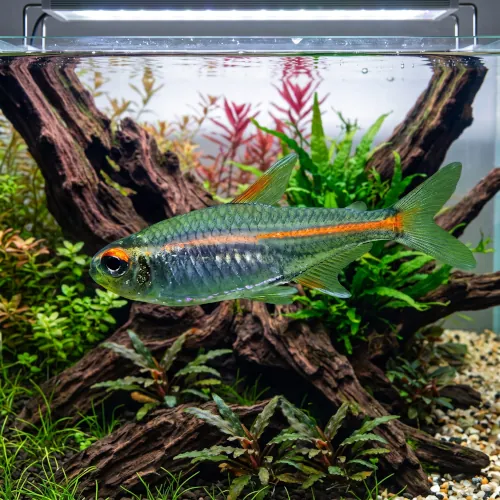

Nome popular principal
Tetra Glowlight
Tetra Glowlight, Tetra Luz-Vermelha, Glowlight Tetra
Ficha de peixe
Tetras e Caracídeos
Um tetra clássico e muito resistente, famoso pela sua faixa néon brilhante que se destaca incrivelmente em aquários plantados.

Nome popular principal
Tetra Glowlight, Tetra Luz-Vermelha, Glowlight Tetra
Nome científico
Nome técnico essencial para taxonomia, cruzamento de manejo e referência editorial consistente.
Dificuldade de manejo
Use este nível como referência inicial, sempre considerando volume, estabilidade e compatibilidade do aquário.
Seção 1
Seção 2
Seções 4 a 6
Tetra Glowlight tem hábito alimentar onívoro. Excelente. 1 a 2 vezes ao dia. Aceita com facilidade rações em flocos ou micro-grânulos, beneficiando-se da oferta de dáfnias, artêmias e pequenos alimentos vivos.
Fêmeas adultas são mais roliças e possuem o abdômen visivelmente mais volumoso; machos são mais esguios. Tipo de reprodução: Ovíparo. Dificuldade de reprodução: Intermediário. A desova ocorre entre plantas de folhas finas em ambiente de pouca iluminação, sendo prudente separar os pais após a postura.
Alta. Substrato recomendado: Substrato escuro ou areia fina de rio. Necessidade de esconderijos: Média. Destaca sua cor cintilante quando mantido sob iluminação suave, com vegetação abundante e substrato de tonalidade escura.
Seção 7
Muito rústico e adaptável, é uma ótima alternativa ao Tetra Neon para iniciantes e aquários comunitários de água ácida a neutra.
Seção 8
O ideal é manter um grupo mínimo de 8 a 10 indivíduos para que nadem em cardume coeso e não fiquem tímidos.
Sim, é um excelente companheiro para o Betta, pois é pacífico, não belisca nadadeiras e habita a zona intermediária do aquário.
Desenvolve-se melhor em água levemente ácida a neutra, com PH situado idealmente na faixa entre 6.0 e 7.2.